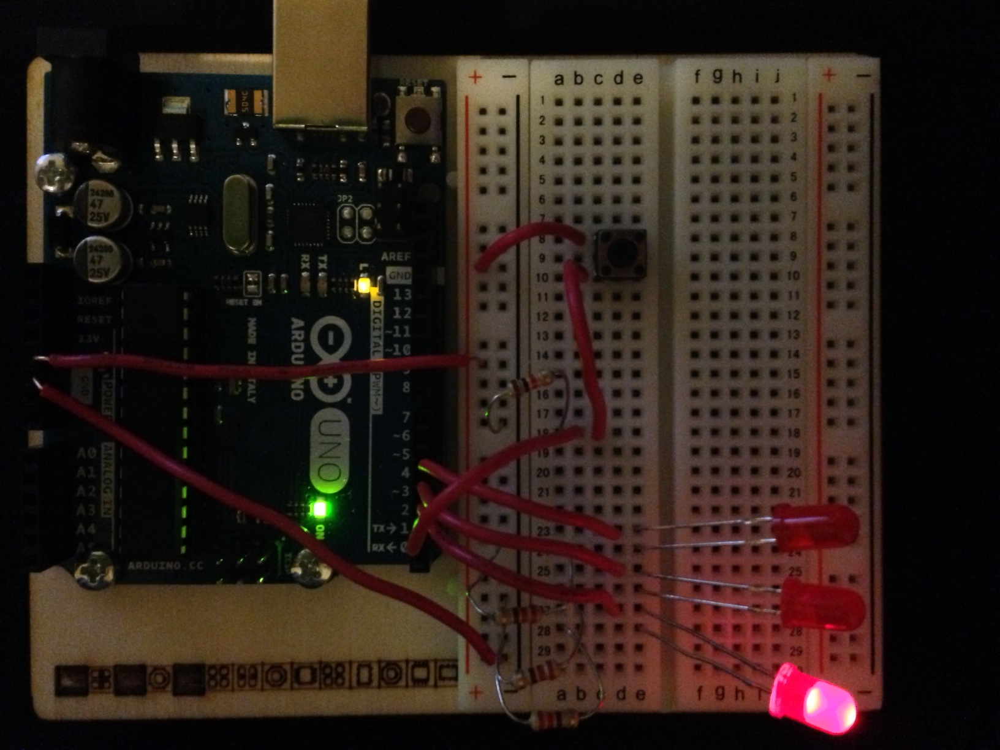

3:10 PM 2014-11-18
I got the EMF detector (theremin) slightly working. By that, I mean not working at all because the output is unpredictable.
Some times it works fine, it makes a noise when it's close to a strong EMF source such as a power outlet. But other times it just picks up random signal and I have yet to figure out what it is.
I have consulted local experts. They explained: one of the possibility that causes the randomness is the objects around the theremin may act like a capacity which it will
induce a current, therefore creating unwanted inputs. Another hypothesis suggets that the theremin is picking up radio waves (radio, WiFi, or any other similar waves)
How did I make it?
For inputs, I have a "probe", which is a long solid-core insulated copper wire (about 15cm long) attached to analog pin A5.
I also have a 10MΩ resistor with one side connected to the probe and the other side connected to GND (ground)
For outputs, I have an LED as well as a speaker wired up to digital pin D11 and GND. In the middle is a 220Ω resistor.
The Arduino takes analog input from the probe and compares it with a set number, this number can be set to change the offset of sensitivity. The comparison then makes the LED and the speaker turn on and off.
9:11 PM 2014-11-18
I started a new project. The Project 02 from the official project book. Because I only have one set of Arduino, it means that I'll have to the theremin apart.
But oh well. It wasn't good anyway. Once I have gathered more knowledge about circuitry and Arduino projects in general, perhaps I can build a better one with more predictable results.
At this point in time, I have become more adapted to reading electric / circuit diagrams. Instead of looking and following the pictures in the book, I can just place the components and visualize
how it will all flow out in my head. I also learned about buttons and how they should be placed, well, at least for the very basic button included in the kit.
9:13 PM 2014-11-18
Some small inconvenience: I didn't want to use the pre-made jumper wires came in the kit because, I don't know, I feel cheap?
Anyway, what I use for wiring things up is my own bundle of wires, but then I'll have to cut them and strip them. And since I don't own a wire stripper, I have to strip them using scissors which is painfully frustrating.
Until I have more wire supplies, I guess I'll to keep doing these infuriating work.
9:19 PM 2014-11-18
Phew! Just finished Project 02. It didn't take a lot of time, but still fun.
This is only the stuff showed in the book, I have not added or modified anything at the time because I still need to analyse the code to see how it works. But it should not be too hard
I also recorded a video of the project in action along with voice explanation of the circuitry.
I am planning on expanding this project, probably more LEDs. I was thinking somewhere in vicinity of 10 or more LEDs where the project only has 3.
